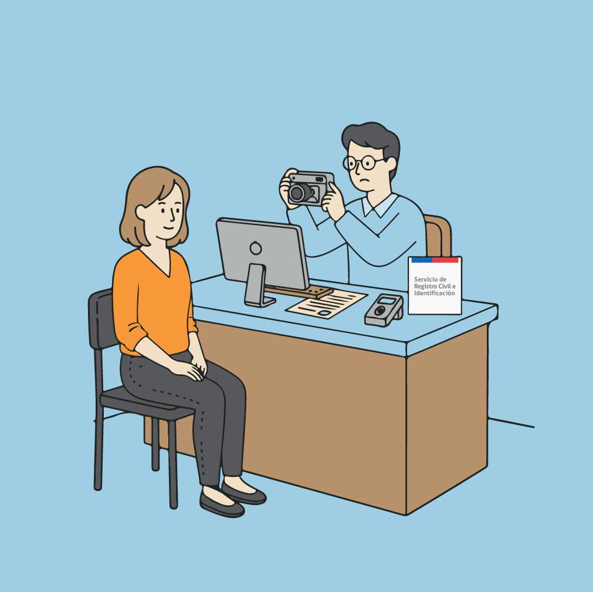
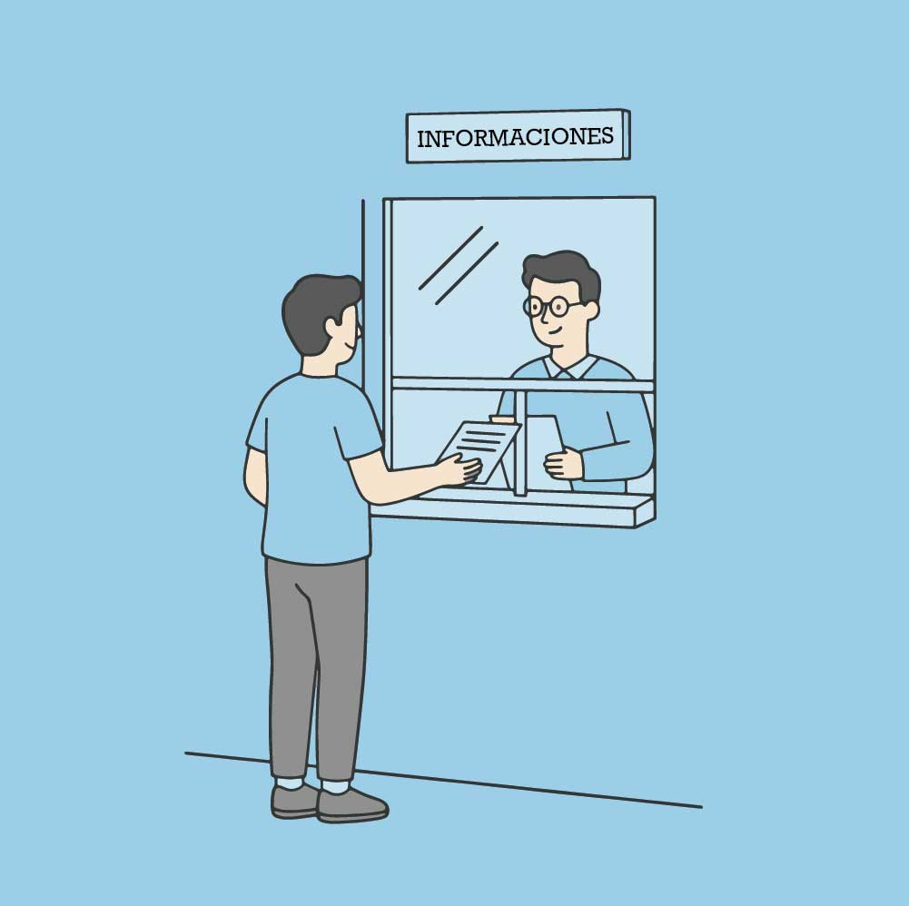

Un experimento para imaginar trámites públicos más simples, claros y humanos,
creado mientras aprendemos desarrollo frontend paso a paso.
Historias de personas que necesitan hacer un trámite
Historia 1: Ana y la renovación de su cédula
Ana tiene 29 años y necesita renovar su cédula de identidad. No sabe si debe pedir hora,
qué documentos llevar ni cuánto se demora el trámite. En este laboratorio queremos
prototipar una guía simple para que personas como Ana no pierdan tiempo ni paciencia.

Imagen de referencia para la experiencia de Ana en su trámite de renovación de cédula.
Historia 2: Luis buscando un beneficio social
Luis es padre de dos hijos y escuchó que existe un beneficio estatal al que podría postular,
pero la información está dispersa y poco clara. Nuestro objetivo es imaginar pantallas y
pasos más ordenados para que Luis entienda qué requisitos tiene y cómo avanzar sin confundirse.

Imagen de referencia para la experiencia de Luis buscando un beneficio social